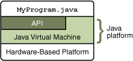

Java technology is both a programming language and a platform.
The Java Programming Language
The Java programming language is a high-level language that can be characterized by all of the following buzzwords:
Simple Architecture neutral Object oriented Portable Distributed High performance Multithreaded Robust Dynamic Secure Each of the preceding buzzwords is explained in The Java Language Environment , a white paper written by James Gosling and Henry McGilton.
In the Java programming language, all source code is first written in plain text files ending with the
.javaextension. Those source files are then compiled into.classfiles by thejavaccompiler. A.classfile does not contain code that is native to your processor; it instead contains bytecodes — the machine language of the Java Virtual Machine1 (Java VM). Thejavalauncher tool then runs your application with an instance of the Java Virtual Machine.
An overview of the software development process.
Because the Java VM is available on many different operating systems, the same
.classfiles are capable of running on Microsoft Windows, the Solaris TM Operating System (Solaris OS), Linux, or Mac OS. Some virtual machines, such as the Java HotSpot virtual machine, perform additional steps at runtime to give your application a performance boost. This include various tasks such as finding performance bottlenecks and recompiling (to native code) frequently used sections of code.
Through the Java VM, the same application is capable of running on multiple platforms.


The Java Platform
A platform is the hardware or software environment in which a program runs. We've already mentioned some of the most popular platforms like Microsoft Windows, Linux, Solaris OS, and Mac OS. Most platforms can be described as a combination of the operating system and underlying hardware. The Java platform differs from most other platforms in that it's a software-only platform that runs on top of other hardware-based platforms.The Java platform has two components:
You've already been introduced to the Java Virtual Machine; it's the base for the Java platform and is ported onto various hardware-based platforms.
- The Java Virtual Machine
- The Java Application Programming Interface (API)
The API is a large collection of ready-made software components that provide many useful capabilities. It is grouped into libraries of related classes and interfaces; these libraries are known as packages. The next section, What Can Java Technology Do? highlights some of the functionality provided by the API.
As a platform-independent environment, the Java platform can be a bit slower than native code. However, advances in compiler and virtual machine technologies are bringing performance close to that of native code without threatening portability. 
The API and Java Virtual Machine insulate the program from the underlying hardware.
The terms"Java Virtual Machine" and "JVM" mean a Virtual Machine for the Java platform.